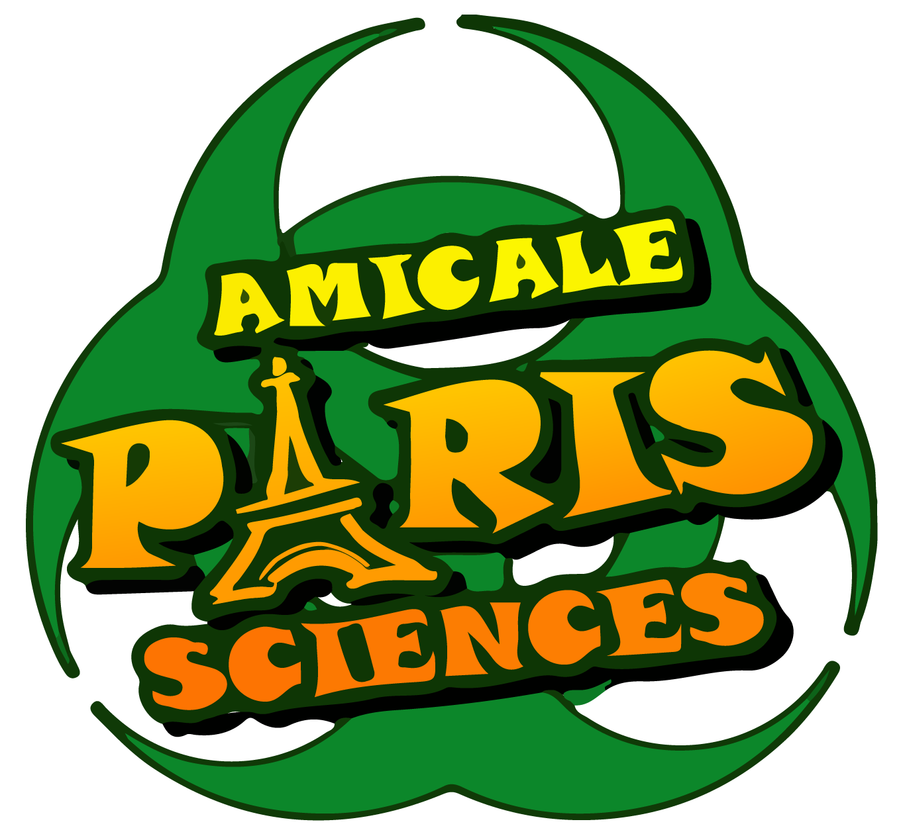

2009 - 2012
Etudes secondaires au Lycée Hoche à Versailles
Juin 2012
Obtention du Baccalauréat Général Scientifique
- Option Sciences de la Vie et de la Terre
- Spécialité Physique - Chimie
- Mention Bien

2012 - 2014
Entrée en PACES à Paris Descartes
- Redoublement en 2013
- Reçu-collé au concours en 2014
2014 - 2016
Entrée en L2 Sciences pour la Santé (Université Paris Descartes) en équivalence en septembre 2014
- Obtention de la 2ème année de licence (L2) en 1ère session
- Obtention de la 3ème année de licence (L3) en 1ère session
Juin 2016
Obtention de la licence Sciences et Technologies - Mention Sciences pour la Santé
2016 - 2017
Entrée en 1ère année d'Ingésup (B1) sur le campus d'Ynov Paris
Février 2009
Stage au Grand Optical
- Fabrication de verres de lunettes
- Montage des verres
- Accueil des clients
- Gestion de commandes

2014 - 2015
Membre Actif de l'Amicale Paris Sciences
- Réalisation de projets tout au long de l'année :
- De nombreux petits projets
- Quelques projets de plus grande importance
- Organisation d'événements :
- Des petits déjeuners ou des afterworks
- Des soirées ou des voyages
2015 - 2016
Vice-Président chargé de communication à l'Amicale Paris Sciences
- Gestion d'un serveur linux hébergé par 1&1
- Création d'un site basé sur Joomla
- Création du template du site
- Gestion de comptes Facebook, Twitter, et YouTube
2016 - 2017
Membre Ancien de l'Amicale Paris Sciences
- Rôle de conseil pour le nouveau Bureau
- Aide ponctuelle pour l'organisation de certains événementq